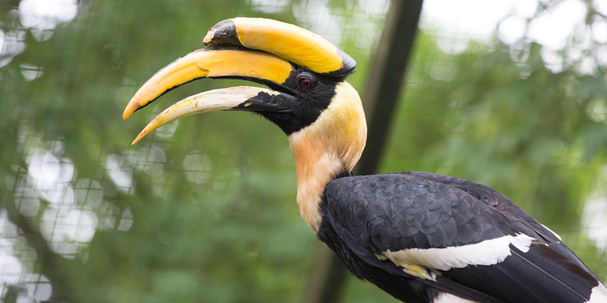

Great Hornbill
AKA: Great Indian hornbill Scientific Name: Buceros bicornis Family: Bucerotidae Species: B. bicornis Speed: 30 km/h approximately Length: 95 – 130 cm Mass: 2.15 – 4 kg Wing Span: 152 cm Life Span: 50 years Location: Africa and Southeast Asia. Diet: Mostly feeds on fruits. The diet also includes insects, birds, small reptiles, and mammals.
Appearance:
Dark eyes with prominent eyelashes. It has a long tail, broad wings, and large, curved bill. The body is black with a white neck, wing coverts and flight feathers.
Facts:
- The sound produced by this bird in flight can be heard from a distance.
- It is the state bird of Kerala, Arunachal, and Chin.
- It is able to consume as many as 150 figs within one meal.